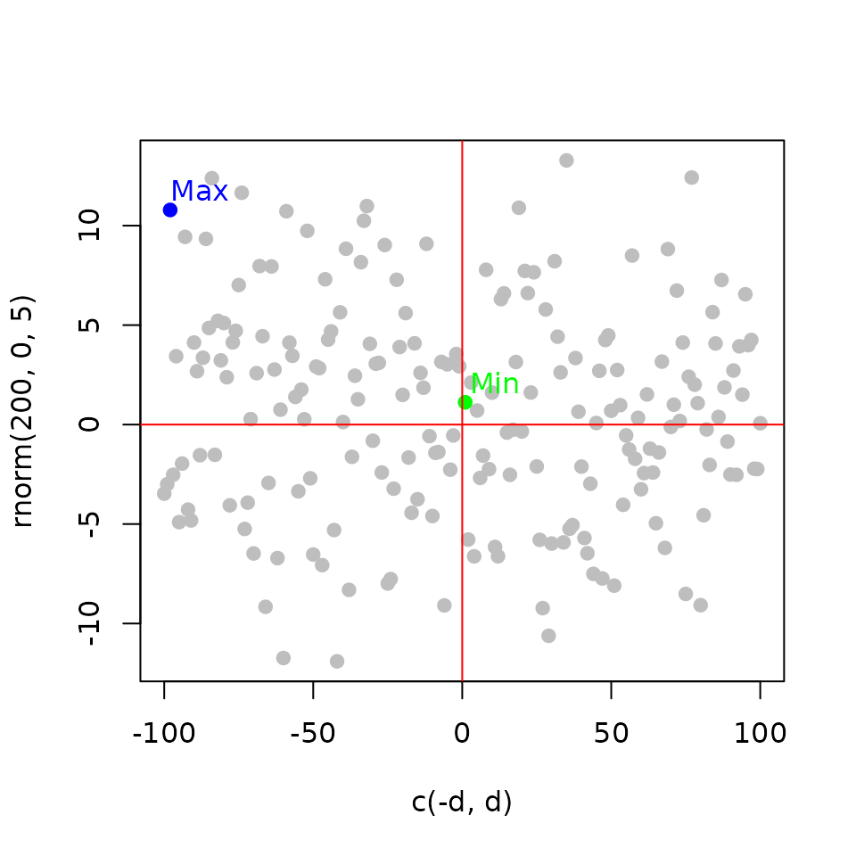
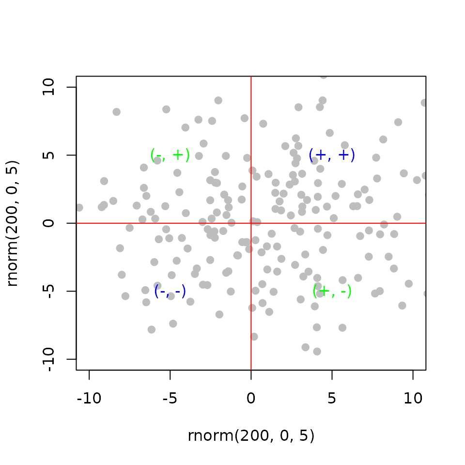
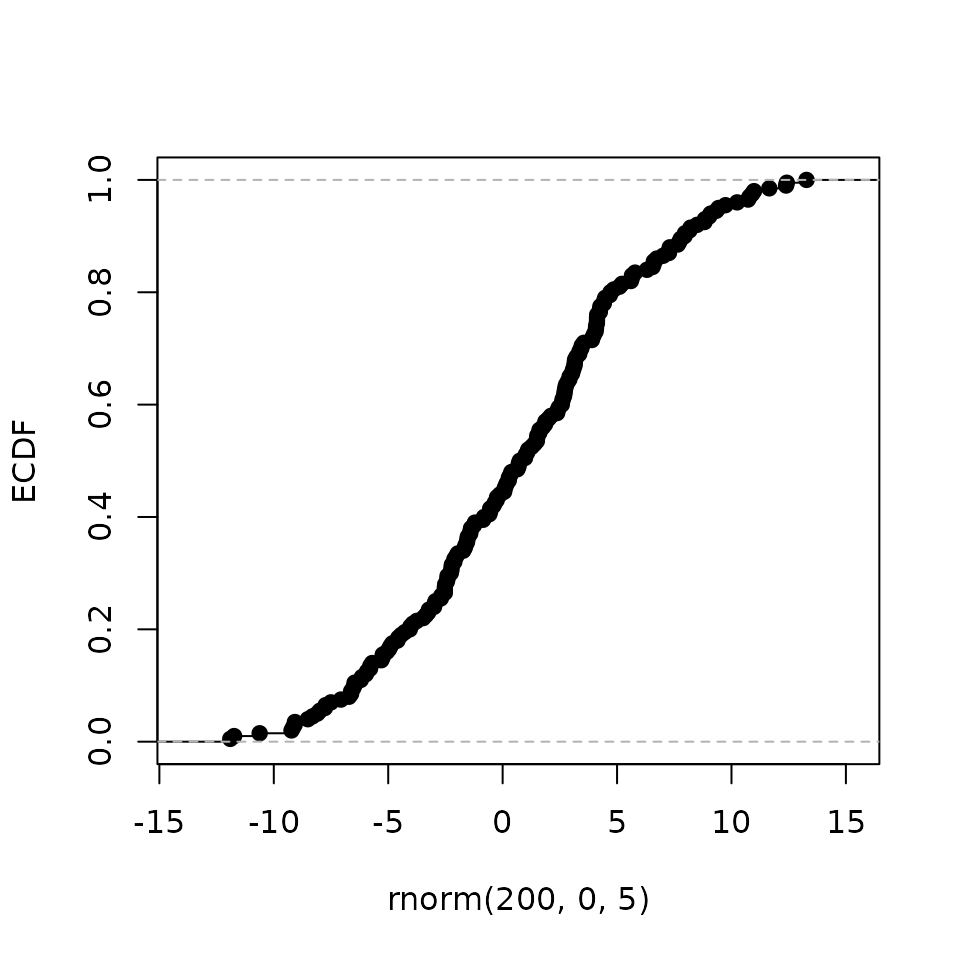

Introduction: Introduction to target package
Mahmoud Ahmed1
2021-01-23
Source:vignettes/workshop_introduction.Rmd
workshop_introduction.RmdBackground
Predicting the interaction of two factors using binding and expression data
The binding of a transcription factor to a regulatory region (e.g. gene promoter) induces or represses its expression Rougemont and Naef (2012).
Transcription factors share their binding sites with other factor, co-factors and/or DNA-binding proteins forming complexes.
The integration of the overlapping binding sites and the effect on gene expression of perturbing the factors can be used to infer their combined function; cooperative or competitive.
Modeling the binding sites as the discounted distances of the ChIP peaks
Peak Score (\(S_p\)): is the distance (\(\Delta\)) from transcription start site (TSS) relative to a 100 kb Wang et al. (2013).
\[ S_p = e^{-(0.5+4\Delta)} \]
The shape of the function approximate empirical observations Tang et al. (2011)
Modeling the regulatory potential as the sum of the weighted peaks
Gene Score (\(S_g\)): is the sum of the scores (\(S_p\)) of the \(k\) peaks nearby the TSS.
\[S_g = \sum_{i=1}^k S_{pi}\]
Regulatory potential increases with the number of binding sites Tang et al. (2011).
# define distances
d <- 1:100
# sample distances to assign genes
set.seed(123)
g <- sample(1:10, 100, replace = TRUE)
# count the number of instances
n <- as.numeric(table(g))
# aggregate the distances for each instance
s <- aggregate(d, list(g), sum)$x
# plot aggregate distances over the number of instances
plot(n, s,
pch = 19,
xlab = 'table(g)', ylab = 'aggregate(d, g, sum)')Integrating the factor binding and the expression information
Rank Product (\(RP_g\)): the gene score (\(R_{gb}\)) rank is multiplied by the gene statistics rank (\(R_{ge}\)) from differential expression Breitling et al. (2004).
\[ RP_g = \frac{R_{gb}\times R_{ge}}{n^2} \]
Integrate the binding events and the functional effect Tang et al. (2011).
# define distances
d <- 1:100
# make a random stat variable
set.seed(12345)
t <- rnorm(200, 0, 5)
# calculate rank product
rp <- rank(abs(c(-d, d))) * rank(abs(t))
# get min and max ranks
pmax <- which(rp == max(rp))
pmin <- which(rp == min(rp))
# plot random stats over distances
plot(c(-d, d), t,
pch = 19, col = 'gray',
xlab = 'c(-d, d)', ylab = 'rnorm(200, 0, 5)')
# highlight the max rank
points(c(-d, d)[pmax], t[pmax],
col = 'blue', pch = 19)
text(c(-d, d)[pmax]+10, t[pmax] + 1,
col = 'blue', labels = 'Max')
# highlight the min rank
points(c(-d, d)[pmin], t[pmin],
col = 'green', pch = 19)
text(c(-d, d)[pmin] + 10, t[pmin] + 1,
col = 'green', label = 'Min')
# make quadrant lines
abline(h = 0, col = 'red')
abline(v = 0, col = 'red')
Modeling the interaction of two factors using independent perturbations
Regulatory Interaction (\(RI\)): is the product of the gene statistics from differential expression of the perturbation of the two factors (\(x\) and \(y\)) separately.
\[ RI_{g} = x_{ge}\times y_{ge} \] and,
\[ RP_g = \frac{R_{gb}\times RI_{ge}}{n^2} \]
# define two random stat variables
set.seed(12345); t <- rnorm(200, 0, 5)
set.seed(321); t2 <- rnorm(200, 0, 5)
# plot the two random stat variables
plot(t, t2, ylim = c(-10, 10),
xlim = c(-10, 10), pch = 19, col = 'gray',
xlab = 'rnorm(200, 0, 5)', ylab = 'rnorm(200, 0, 5)')
# highlight four quadrant by sign
text(5,5, '(+, +)', col = 'blue')
text(-5,-5, '(-, -)', col = 'blue')
text(-5,5, '(-, +)', col = 'green')
text(5,-5, '(+, -)', col = 'green')
# make quadrant lines
abline(h = 0, col = 'red')
abline(v = 0, col = 'red')
Aggregating the effect of the binding events
Empirical Cumulative Distribution Function (ECDF): the proportion of genes in a category (up- or down-regulated genes) that are ranked at or better than the x-axis (regulatory potential value) value Tang et al. (2011).
Aggregate the effect of the factor perturbation in relation to its regulatory potential.
# make a random stat variable
set.seed(12345)
t <- rnorm(200, 0, 5)
# calculate the cumulative distribution function
ecdf_fun <- ecdf(t)
# plot ecdf
plot(ecdf_fun,
main = '', xlab = 'rnorm(200, 0, 5)', ylab = 'ECDF')

Functions in the target R package
?target::associated_peaks
?target::direct_targets
?target::plot_predictions
?target::test_predictionsComparison with existing R packages
-
rTRMidentifies the transcriptional regulatory modules (TRMs) which are complexes of transcription factors and co-factors by integrating ChIP, gene expression and protein-protein interactions Diez, Hutchins, and Miranda-Saavedra (2013). -
TFEA.ChIPcurates large quantities of data from different sources and uses this data to build a database where queries of transcription factor targets can be constructed Puente-Santamaria, Wasserman, and Peso (2019). -
transcriptRuses the ChIP data to denovo identify transcripts which are then used to quantify the expression from the RNA-Seq data Karapetyan AR (2019).
Limitations of target
- Comparable sets of data for the two factors are required; binding data using ChIP and gene expression data under factor perturbation (overexpression or knockdown).
- Assume that the interaction between two DNA-binding proteins is linear which may not be the case always.
- Cannot detect assisted binding.
Availability
-
targetis available as an open source R/Bioconductor package, here - An interactive shiny application can be invoked locally through R or accessed directly on the web, here
- The source code for the package and the interactive application is available here